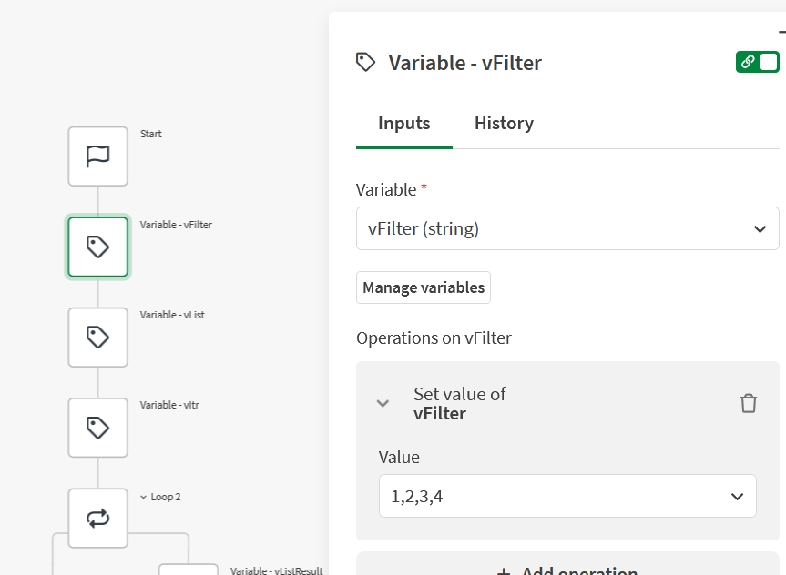
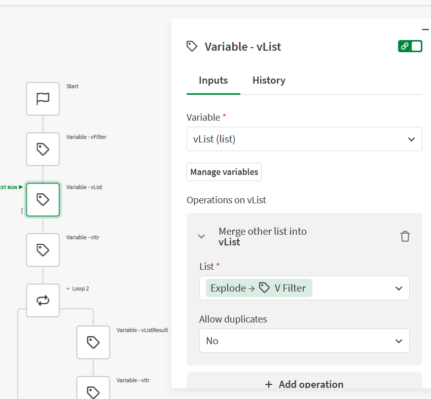
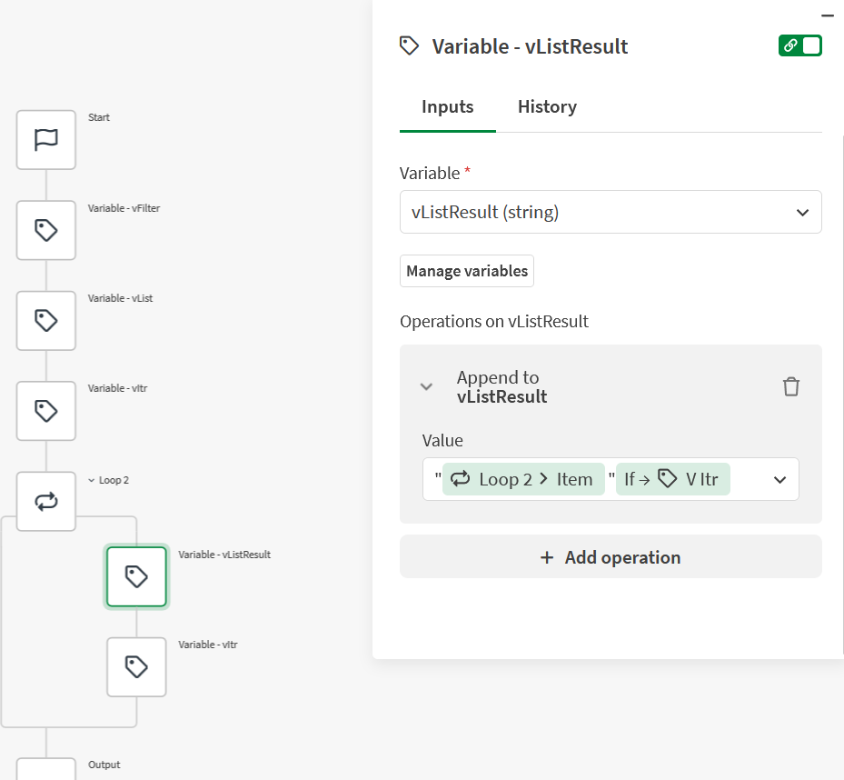
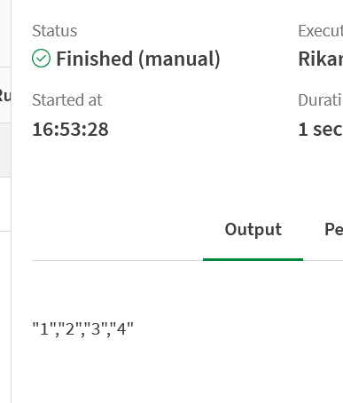
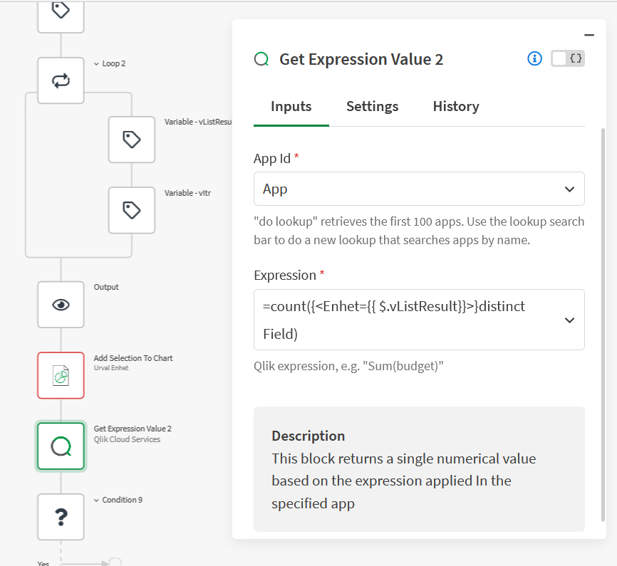
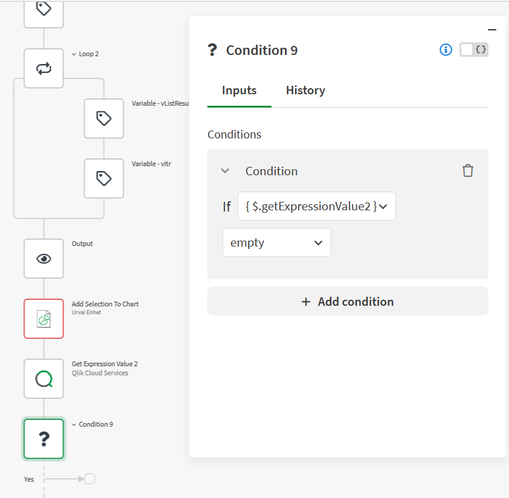

A common pattern for tabular report distribution is storing recipient config in an Excel file — one row per recipient, with columns for email address, display name, and which filters should be applied to their version of the report. When a recipient needs more than one filter value, those values end up in a single cell, separated by a comma:
Email | Filter
anna@example.com | 1,2,3,4
bob@example.com | 5The problem is that Qlik Automate's Add Selection To Chart block doesn't accept a raw comma-separated string. It expects the values in a specific format:
"1","2","3","4"This automation converts the raw filter string into that format, applies it to a chart in a report, and — before sending — checks whether there is actually data for this combination. If there isn't, it skips the report entirely.
The setup
Four variables drive the logic:
- vFilter (string) — the raw comma-separated value from Excel, e.g.
1,2,3,4 - vList (list) — the same values exploded into a proper list
- vItr (number) — a countdown counter used to control comma placement
- vListResult (string) — the formatted output, built up item by item

Step 1 — Explode the string into a list
The first variable block sets vFilter to the raw string. In a real automation
this would be a reference to the Excel cell, not a hardcoded value.
The second block converts it into a list using the Merge operation with
Explode → vFilter as the source. Explode splits a comma-separated string
into individual list items — so 1,2,3,4 becomes a four-element list.

The third block sets vItr to {count: { $.vList }} — the number of
items in the list. This becomes the countdown.
Step 2 — Build the formatted string in a loop
The loop iterates over vList. Inside each iteration, two things happen:
- vListResult — append the current item, wrapped in quotes, followed by a comma only if this is not the last item
- vItr — subtract 1

The append expression is:
"{$.loop2.item}"{if: { $.vItr } != 1, ',',}
Breaking it down: the item is always wrapped in quotes. The {if: ...} block
adds a comma after it — but only when vItr is not equal to 1.
Since vItr starts at the total count and decrements each iteration, it reaches
1 on the final item. That means the last item gets no trailing comma.
Result
After the loop, vListResult contains the formatted string ready to use:

Step 3 — Apply the selection to a chart
Pass vListResult to the Add Selection To Chart block as a
raw list value:
Field: YourFieldName
Values: [{ $.vListResult }]
Mode: Raw
The square brackets wrap the already-formatted string as a raw list. With Mode
set to Raw, Qlik Automate passes the value through without any additional
escaping — so the "1","2","3","4" string lands in the selection exactly as built.
Step 4 — Skip the report if there is no data
Before the report is sent, it's worth checking whether this filter combination actually returns any data. A recipient whose filter matches nothing should not receive an empty report.
Use a Get Expression Value block to evaluate a count expression in the app.
The expression uses vListResult directly in set analysis — the same formatted
string that was just applied to the chart:
=count({<Enhet={{ $.vListResult }}>}distinct Field)
Then a Condition block checks the result: if getExpressionValue2
is empty, the Yes branch exits — the report is not sent. The No branch
continues to the mail block.

Download
The automation is available as an importable JSON file. In Qlik Automate:
- Open Automate and create a new, empty automation
- Right-click anywhere on the empty canvas → Upload workspace
- Select the JSON file below
After importing, update the Add Selection To Chart block with your chart ID
and field name, and connect the Get Expression Value block to your app.
The vFilter variable is set to a hardcoded test value — replace it with a
reference to your Excel data source.